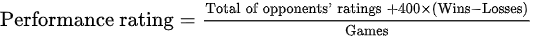
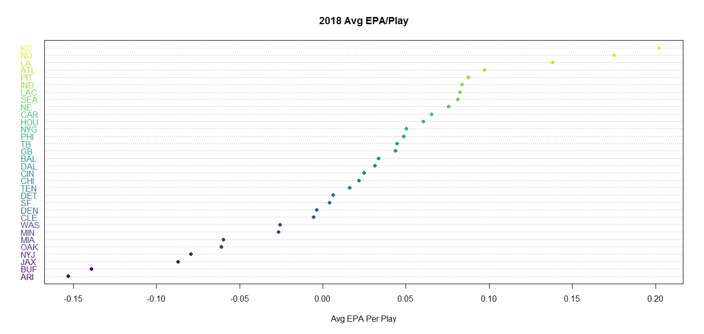

Whilst researching various ranking systems across competetive sports and games, I came across the famous ELO rating system, devised by Arpad Elo. The ELO rating system is interesting to me as it has not been long since it was used to select the top teams for the NCAA College Football Playoff. However, in recent years it has been abandoned in favour of a selection commitee. This begs the question, what's more reliable in terms of grading teams? Mathematic processes such as ELO rating, or the infamous 'eye test'?
The ELO system is a fairly simple model for evaluating the skill level of teams. Each time starts with a flat rating of 1000 points. Each team's rating is updated after every game, using the following formula:
Using the R package nflscrapR, I collected the results of all 256 games of the 2018 regular season and tracked each team's rating throughout the season, and plotted the final results on a dotchart. The results were interesting. Initially I was skeptical of such a simple model, but I was surprised to see that eleven of the top twelve teams in my ELO rankings did in fact make the playoffs. Also, it exactly predicted the order in seeding in the NFC; Saints 1st, Rams 2nd, Bears 3rd, Cowboys 4th, Seahawks 5th and Eagles 6th.
The final ELO rankings allow us to sort teams into tiers, and it gives some insight into the potential flaws of some leagues current method of seeding for playoffs. As it stands, the NFL is split into two conferences, the NFC and the AFC. Each conference sends six teams with the most wins to the playoffs. However, if the goal is to send the twelve best teams from the entire league, the current system seems to fall short.
The Pittsburgh Steelers would benefit the most from an ELO ranking system as they narrowly missed the playoffs due to being the number seventh ranked team in the AFC, despite being twelfth overrall in overall ELO rating. In my ranking system they would replace the NFC sixth seed Philadelphia Eagles, who finished the 2018-19 season 29+ points lower than the Steelers in the final ELO standings.
ELO also can help us better understand the outcomes of games during the season. Perhaps the best example of this is the first round playoff matchup of Chicago vs Philadelphia, a game in which the Eagles were significant underdogs. The difference between the two teams ratings is a staggering 163.8, the largest difference of all playoff matchups, yet Philadelphia defied odds and won the game on the road. A six seeded team beating a third seed does not sound like the craziest result in NFL history, but of all 267 matchups (regular season and postseason) the Eagles beating the Bears in round one of the playoffs was the most statisically improbable outcome of all.
Photo by CBS Sports
After devising an ELO system to rank each teams season long performance, I decided to explore which factors were more valueable to a teams' success. n
